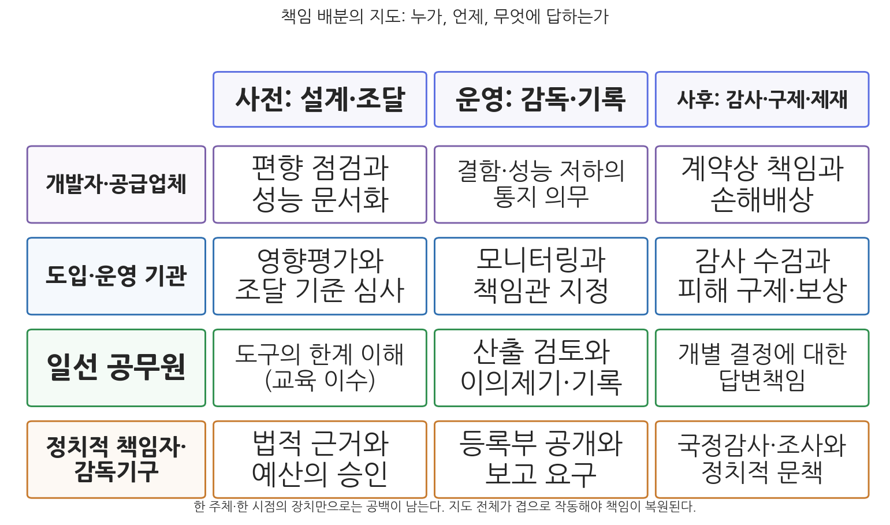

4주차 2차시. AI와 책임성 (2): 책임의 배분과 제도
로보뎃은 조잡하고 잔인한 장치였다. 공정하지도 합법적이지도 않았으며, 많은 사람을 범죄자처럼 느끼게 만들었다. (호주 로보뎃 왕립조사위원회 최종보고서, 2023)
이 장에서 배우는 것
2021년 1월 15일, 네덜란드의 뤼터(Mark Rutte) 총리는 내각 총사퇴를 발표했다. 국세청이 알고리즘 위험분류를 앞세워 수만 가구를 보육수당 부정수급자로 몰아 파산과 가정 해체로 내몬 아동수당 스캔들에 대한 정치적 책임이었다. 정부 하나가 통째로 물러났으니 책임은 완결된 것일까. 그렇지 않았다. 검찰은 이미 그 일주일 전에 국세청을 형사 수사하지 않기로 결정했고, 이듬해 법원은 국세청을 형사소추할 수 없다고 확인했다. 사퇴한 뤼터는 두 달 뒤 총선에서 승리해 다시 총리가 되었다. 피해 가구에 대한 보상은 2026년인 지금도 끝나지 않았다. 가장 무거워 보였던 정치적 책임이 실은 가장 가벼웠고, 정작 필요한 개인의 문책과 피해자의 구제는 더디고 불완전했던 것이다.
지난 차시에서 우리는 AI가 만드는 책임 공백의 구조를 보았다. 많은 손과 많은 것들이 결정에 기여하기에 "결정한 자가 답한다"는 전통 공식이 작동하지 않는다는 것이었다. 이번 차시는 그 공백을 메우는 작업이다. 공백의 해법은 책임질 한 사람을 기어이 찾아내는 것이 아니라, 여러 주체에게 각자가 통제할 수 있는 몫의 책임을 미리 나누어 두는 것, 곧 책임의 배분(allocation)이다. 그리고 배분된 책임이 실제로 작동하게 만드는 두 개의 제도적 관문이 감사와 이의제기다. 이 장에서는 배분의 프레임워크를 세우고, 네덜란드와 호주라는 두 스캔들의 책임 규명 경과를 2026년 기준으로 추적하며, 감사·이의제기 제도와 제도 설계의 남은 과제를 살핀다. 구체적으로 다음을 배운다.
- 책임 배분의 프레임워크: 주체(개발자·기관·공무원·정치)와 시점(사전·운영·사후)의 지도
- 실제 사례에서 책임 규명이 어떻게 진행되었는가: 아동수당 스캔들과 로보뎃의 후일담
- 감사(알고리즘 감사, 등록부)와 이의제기(이유 제시, 설명요구권) 제도
- 제도 설계의 과제: 형식적 준수, 비난 회피, 감독 역량, 민간 공급망의 문제
이 장은 하나의 질문을 따라 전개된다. "흩어진 책임을 누구에게, 어떻게 다시 배분하고, 무엇으로 작동시킬 것인가?"
2.1 책임 배분의 프레임워크를 세운다 (주체 × 시점의 지도, GAO 프레임워크, 미국 연방 정책의 경과) → 2.2 두 스캔들의 책임 규명 경과를 2026년까지 추적한다 (기관·정치의 책임과 개인의 책임이 어떻게 갈렸는가) → 2.3 사후 책임성의 두 관문, 감사와 이의제기 제도를 본다 → 2.4 제도 설계의 남은 과제를 따지고 5주차(형평성)로 넘어간다.
2.1 책임 배분의 프레임워크: 공백에서 지도로
한 사람을 찾지 말고, 여럿에게 나누어라
책임 공백 앞에서 우리의 직관은 "그래서 결국 누구 잘못이냐"는 단일 범인 찾기로 향한다. 그러나 지난 차시에서 보았듯 공백은 악인의 부재가 아니라 기여의 분산에서 생기므로, 단일 범인 찾기는 대개 실패하거나(아무도 책임지지 않음) 왜곡된다(말단의 도덕적 크럼플 존). 대안은 발상을 뒤집는 것이다. 사고가 난 뒤에 책임자를 수색하는 대신, 시스템의 생애주기 전체에 걸쳐 누가 무엇에 답할지를 미리 정해 두는 것이다. 책임 배분의 프레임워크는 두 개의 축으로 짤 수 있다. 하나는 주체의 축이다. 개발자·공급업체, 도입·운영 기관, 일선 공무원, 그리고 정치적 책임자와 감독기구가 각각 다른 몫을 진다. 다른 하나는 시점의 축이다. 사전(설계·조달), 운영(감독·기록), 사후(감사·구제·제재)의 각 단계마다 요구되는 책임의 내용이 다르다.

그림 4-3을 읽는 법은 이렇다. 세로축의 네 줄이 책임의 주체이고, 가로축의 세 칸이 시점이다. 각 칸에는 그 주체가 그 시점에 답해야 할 내용이 들어 있다. 개발자는 사전에 편향을 점검하고 성능을 문서화하며, 운영 중 결함을 통지하고, 사후에 계약상 책임을 진다. 기관은 영향평가와 조달 심사, 모니터링과 책임관 지정, 감사 수검과 피해 구제를 맡는다. 일선 공무원은 도구의 한계를 이해하고, 산출을 검토하며 이의를 기록하고, 개별 결정에 대한 답변책임을 진다. 정치적 책임자와 감독기구는 법적 근거와 예산을 승인하고, 등록부 공개와 보고를 요구하며, 국정감사와 조사로 문책한다. 이 그림에서 알 수 있는 것은 두 가지다. 첫째, 어느 한 칸도 다른 칸을 대신하지 못한다. 개발자의 문서화가 아무리 충실해도 기관의 모니터링이 없으면 공백이 남고, 공무원의 이의제기 권한이 없으면 문서는 장식이 된다. 둘째, 지난 차시의 그림 4-1과 겹쳐 보면 이 지도는 책임 공백 그림의 화살표들을 하나하나 계약과 규정으로 바꾸는 작업이다.
알고리즘 사용으로 훼손될 수 있는 민주적 책임성과 윤리적 책임을 어떻게 보완하고 재설계할지 모색하는 논의와 실천을 가리킨다. 알고리즘이 개입한 결정에 대해서도 설명하고 정당화할 의무, 질문하고 판단할 포럼, 판단에 따르는 제재와 시정이 유지되어야 한다는 요구다(Busuioc, 2021). 알고리즘 보고서 제도, 영향평가, 감사, 등록부가 그 제도적 표현이며, 데이터 보호(목적 제한, 보안, 침해 보고)의 요구가 알고리즘의 산출에까지 확장되는 흐름과 맞물려 있다(Bignami, 2022).
프레임워크의 실례: GAO와 미국 연방정부의 경과
배분의 지도를 정부 차원에서 명문화한 초기 사례가 미국이다. 미국 감사원(GAO)은 2021년 연방기관을 위한 AI 책임성 프레임워크를 발표하여 거버넌스, 데이터, 성과, 모니터링이라는 네 가지 상호 보완적 원칙을 제시했다(GAO, 2021). 거버넌스 영역에서는 기관 내 AI 관리의 명확한 역할 분담과 전략 수립을, 데이터 영역에서는 학습데이터의 정확성과 편향 제거를, 성과 영역에서는 AI 도구가 의도한 결과를 내는지의 검증을, 모니터링 영역에서는 예상치 못한 부작용에 대한 지속적 평가를 요구한다. 감사기관이 만든 프레임워크답게, 각 항목은 "감사인이 물어야 할 질문"의 형태로 되어 있다. 책임 배분을 감사 가능한 언어로 번역한 것이다.
행정부 차원에서는 2020년 12월의 행정명령 13960(연방정부에서 신뢰할 수 있는 AI 사용 촉진)이 합법성, 합목적성, 정확성, 안전성, 투명성, 책임성 등의 원칙과 함께 AI 시스템의 책임 소재 명확화(책임관 지정 등)와 사용 과정의 추적가능성을 명시했다. 이후 정권 교체를 거치며 연방 AI 정책의 강조점은 크게 출렁였다. 2026년 현재 유효한 관리예산처 지침 M-25-21(2025년 4월)은 "혁신, 거버넌스, 공공신뢰를 통한 연방 AI 활용 가속"이라는 제목이 말해 주듯 도입 촉진 쪽으로 무게를 옮겼지만, 기관별 최고AI책임관(Chief AI Officer) 지정, AI 사용사례 목록의 공개, 국민의 권리에 영향을 주는 고영향(high-impact) AI에 대한 최소 위험관리 관행이라는 책임성의 골격은 유지하고 있다(OMB, 2025). 눈여겨볼 것은 이 골격의 지속성이다. AI를 밀어붙이려는 정부조차 "누가 책임관이고, 어떤 시스템을 쓰고 있으며, 고영향 시스템은 어떻게 관리하는가"라는 배분의 최소 문법은 버리지 못한다. 책임 배분이 진영의 문제가 아니라 행정의 기반 설비임을 보여 주는 대목이다.
2.2 공무원·개발자·기관의 책임: 두 스캔들이 남긴 교훈
프레임워크는 설계도다. 실제 사고가 났을 때 책임 규명이 어떻게 굴러가는지는 사례가 보여 준다. 지난 차시 말미에서 예고한 두 스캔들의 후일담을 2026년 기준으로 따라가 보자. 두 사례 모두 "기관과 정치의 책임"과 "개인의 책임"이 전혀 다른 속도와 강도로 작동했다는 공통점이 있다.
네덜란드 국세청은 보육수당 부정수급을 걸러 내는 위험분류모형을 운영하면서 이중국적 등 출신 관련 정보를 위험 지표로 사용했고, 사소한 서류 미비에도 수년치 수당 전액을 무관용으로 환수했다. 약 2만 6천에서 3만 5천 가구가 부정수급자로 몰려 파산, 실직, 가정 해체를 겪었고, 일부 가정에서는 아동이 위탁 보호로 분리되었다. 책임 규명의 경과는 다음과 같다. 2020년 12월 의회 조사보고서 「전례 없는 불의」가 법치의 기본 원칙 침해를 확인했고, 2021년 1월 뤼터 내각이 총사퇴했다. 그러나 같은 달 검찰은 국세청에 대한 형사 수사를 개시하지 않기로 했고, 2022년 7월 헤이그 항소법원은 국세청이 공적 임무 수행에 대한 면책 때문에 형사소추될 수 없다고 판단했다. 개인 공무원에 대한 기소도 이루어지지 않았다. 개인정보 감독기구(AP)는 국적 정보의 위법한 처리에 275만 유로, 위법한 블랙리스트 운영에 370만 유로의 과징금을 국세청에 부과했다. 2024년 2월 의회조사위원회는 보고서 「사람과 법에 눈멀다」에서 국가가 법치국가 원칙을 침해했다고 재확인했다. 피해 보상은 가구당 3만 유로 일괄 지급(카츠하위스 제도)으로 시작되었으나, 여러 보상 제도가 얽힌 복잡성 탓에 2025년 말까지도 상당수 가구의 정산이 끝나지 않았다(레이던대학교, 2025년 12월). 사퇴했던 뤼터는 2021년 3월 총선에서 승리해 총리직에 복귀했다.
이 사례가 보여 주는 것은 책임의 층위마다 작동 강도가 달랐다는 사실이다. 정치적 책임성은 가장 극적으로 작동했지만(내각 총사퇴) 가장 빨리 증발했다(두 달 뒤 복귀). 기관의 금전적 책임은 과징금과 보상으로 작동했지만, 과징금은 국세청이라는 기관이 세금으로 내는 돈이고 보상은 피해자가 기다리다 지치는 속도로 진행된다. 법적 책임, 곧 형사적 문책은 기관 면책의 벽에 막혀 개인에게도 조직에게도 닿지 않았다. 지난 차시의 언어로 말하면, 많은 손의 문제는 사후 규명 단계에서 "면책의 문제"로 모습을 바꾼다. 모두가 절차 속에서 일했기 때문에 누구의 행위도 범죄가 되지 않는 것이다.
2023년 7월 왕립조사위원회 최종보고서는 로보뎃을 "조잡하고 잔인한 장치"로 규정하면서, 개인들에 대한 민·형사 소추와 징계를 권고하는 봉인 부록을 달아 연방경찰, 국가반부패위원회(NACC), 변호사 징계기구, 공직위원회에 회부했다. 공직위원회(APSC)의 중앙집중 행위규범 조사는 16명을 조사하여 2024년 9월, 전직 차관 캐서린 캠벨과 러네이 리언을 포함한 12명이 공직 행위규범을 총 97회 위반했다고 발표했다. 그러나 캠벨과 리언은 이미 공직을 떠난 뒤여서 견책·감봉 같은 제재를 부과할 수 없었고, 제재는 현직자 4명에게만 권고되었다. NACC는 2024년 6월 "왕립조사위가 이미 다룬 사안"이라며 회부된 6명을 수사하지 않기로 했다가 거센 비판을 받았다. 감찰관 조사 결과 위원장 폴 브레러턴이 회부 대상자 중 한 명과의 개인적 인연에도 불구하고 결정 과정에서 충분히 손을 떼지 않은 직무상 과실이 확인되었고, NACC는 전직 대법관 제프리 네틀을 독립 재검토자로 지정했다. 네틀은 2025년 2월 수사 개시를 결정했고, NACC는 2026년 3월 11일 조사보고서를 공개하여 6명 중 2명의 중대 부패행위를 인정했다. 한 명은 2015년 내각 제출 문서 준비 과정에서 사회서비스부 공무원들을 고의로 오도했고, 다른 한 명은 2017년 연방 옴부즈맨 조사에서 고의로 오도한 사실이 인정되었다. 나머지 4명은 부패행위가 인정되지 않았으며, 2026년 상반기까지 공개적으로 확인된 개인 형사 기소는 없다(NACC, 2026).
이 사례가 보여 주는 것은 개인 책임 규명의 비용과 시간이다. 위법 판결(2019)부터 세어도 반부패위원회의 최종 판정(2026)까지 7년, 그 사이에 왕립조사위원회, 공직위원회 조사, 반부패위원회의 번복과 재검토라는 세 겹의 절차가 필요했다. 결과도 제한적이다. 97건의 행위규범 위반이 확인되었지만 핵심 책임자들은 퇴직으로 제재를 벗어났고, 부패행위 인정은 2명, 형사 기소는 없다. 여기에 책임 규명 기구 자체가 책임성 논란에 휘말린 대목(NACC 위원장의 이해충돌)은, 책임성 체계가 "감시자는 누가 감시하는가"라는 고전적 문제에서 자유롭지 않음을 보여 준다. 그럼에도 두 사례의 차이는 기록해 둘 만하다. 호주는 조사위원회의 권고가 행위규범 조사와 반부패 수사라는 후속 절차로 실제로 이어지는 경로를 보여 주었고, 오도(誤導) 행위처럼 "시스템 탓"으로 돌릴 수 없는 개인의 행위를 특정하는 데까지 나아갔다. 책임 배분의 지도가 사후 규명 단계에서도 부분적으로나마 작동한 것이다.
개발자와 공급업체의 책임이라는 빈칸
두 스캔들에서 상대적으로 조용했던 주체가 있다. 시스템을 만든 쪽이다. 아동수당 스캔들의 위험분류모형은 국세청 내부 시스템이었지만, 많은 공공 AI는 민간 업체가 개발·공급한다. 지난 차시의 호라이즌 사례에서 후지쓰는 결함을 알고도 26년간 법적 책임을 지지 않았고, 미시간 MiDAS의 개발업체도 배상 주체가 아니었다. 공공부문의 책임성 체계(감사, 국정감사, 징계)는 공무원과 기관을 향해 설계되어 있어서, 조달 계약 뒤편의 민간 공급업체에는 잘 닿지 않는다. 그래서 그림 4-3의 첫 줄, 곧 개발자·공급업체의 책임은 조달 계약과 규제로 만들어 넣어야 하는 칸이다. 계약에 성능·편향 검증과 문서화 의무, 결함 통지 의무, 손해배상 조항을 명시하는 것, 그리고 뒤에서 볼 법제(EU AI Act의 공급자 의무, 한국 AI기본법의 사업자 책무)가 그 도구다.
2.3 감사와 이의제기: 사후 책임성의 두 관문
감사가능성: 기록되지 않으면 답할 수 없다
배분된 책임이 작동하려면, 사후에 결정 과정을 재구성할 수 있어야 한다. 감사가능성(auditability)이다. 알고리즘 영향평가로 도입 전에 목적·설계·잠재적 편향을 문서화하게 하고(10주차에서 상세히 다룬다), 운영 중의 입력·산출·개입 이력을 기록하게 하면, 그 문서와 기록이 감사의 실마리와 국민 참여의 지점이 된다. AI에 대한 투명성 제도화는 결국 답변책임을 확보하기 위한 조치인 것이다. 감사기구들도 움직이고 있다. 다음 사례는 최고감사기구가 알고리즘을 직접 감사한 초기 사례다.
아동수당 스캔들의 나라답게, 네덜란드는 사후 감시 제도의 실험장이 되었다. 네덜란드 감사원(Algemene Rekenkamer)은 2021년 알고리즘 평가 프레임워크(거버넌스, 프라이버시, 데이터와 모델, IT 관리)를 개발한 뒤, 2022년 5월 정부가 실제로 사용 중인 알고리즘 9개를 골라 감사한 결과를 발표했다. 기본 요건을 모두 충족한 것은 3개뿐이었고, 나머지 6개는 성능·영향에 대한 통제 미비, 편향, 데이터 유출과 무단 접근의 위험에 노출되어 있었다(Algemene Rekenkamer, 2022). 같은 시기 네덜란드는 정부 알고리즘의 용도와 작동 방식을 공개하는 국가 알고리즘 등록부를 2022년 12월에 열었고(암스테르담과 헬싱키가 2020년 시 차원에서 먼저 시작한 모델의 전국판이다), 2023년부터는 개인정보 감독기구(AP) 안에 알고리즘 감독국을 두어 정부·민간의 알고리즘 위험을 상시 감시하게 했다.
이 사례가 보여 주는 것은 감사의 대상이 재정에서 알고리즘으로 확장되고 있다는 사실, 그리고 감사를 해 보니 실제로 다수 시스템이 기본 요건조차 갖추지 못했다는 사실이다. 후자가 중요하다. 감사는 처벌 장치이기 전에 발견 장치다. 사고가 나기 전에 "6개가 기준 미달"임을 공개하는 것 자체가, 스캔들 이후의 규명보다 훨씬 싼 값에 책임성을 작동시킨다. 한국에서도 감사원의 감사 대상에 알고리즘 기반 행정이 포함되는 것은 시간문제이며, 그때 감사인이 쓸 질문지가 바로 GAO나 네덜란드 감사원식 프레임워크다.
이의제기: 당사자가 흔들 수 있어야 한다
감사가 위에서 내려다보는 관문이라면, 이의제기는 아래에서 밀고 올라오는 관문이다. 행정법은 오래전부터 이 통로를 갖추고 있었다. 처분에는 이유를 제시해야 하고(이유 부기 의무), 당사자는 행정심판과 행정소송으로 다툴 수 있으며, 법원은 처분의 적법성을 심사한다. AI 시대의 책임성 확보란 이 전통적 원칙들, 곧 절차적 정당성, 이유 제시 의무, 사법 심사가 알고리즘이 관여하는 결정에서 어떻게 적용되고 보완되어야 하는지를 재고하는 일이다. 알고리즘이 관여한 처분이라고 해서 "시스템이 그렇게 판단했습니다"가 이유 제시일 수는 없기 때문이다.
새 법제들은 이 통로를 알고리즘에 맞게 개축하고 있다. EU의 일반개인정보보호법(GDPR) 제22조는 자동화된 결정만으로 중대한 영향을 받지 않을 권리와 인적 개입을 요구할 권리를 규정했고, EU AI Act 제86조는 고위험 AI 시스템에 기반한 결정으로 영향을 받은 사람이 결정에서 AI가 한 역할과 주요 요소에 대한 명확하고 의미 있는 설명을 요구할 권리를 명시했다. 각국의 AI 윤리 지침들도 자동화된 결정의 기록·공개, 이해관계자의 이의제기와 구제 절차, 설계 단계의 인권 영향평가를 공통적으로 담고 있다.
다만 이의제기 제도는 조건이 갖춰질 때만 실질이 된다. 지난 차시의 사례들을 떠올려 보자. 미시간 MiDAS에도 이의제기 절차는 있었다. 그러나 통지가 늦거나 닿지 않아 기한을 놓친 사람이 많았고, 기한이 지나면 자동 징수가 시작되었다. 로보뎃에서도 재심 요청은 가능했지만, 입증 부담이 수급자에게 넘어가 수년 전 급여명세서를 스스로 찾아내야 했다. 이의제기의 실질 조건은 최소한 넷이다. 결정 사실과 이유의 통지, 알아들을 수 있는 설명, 감당할 수 있는 입증 부담, 그리고 이의제기 중 집행의 정지다. 넷 중 하나라도 빠지면 이의제기는 존재하되 작동하지 않는 제도가 된다.
2.4 제도 설계의 과제
2026년의 법제 지형: EU와 한국
책임 배분과 감사·이의제기를 아우르는 종합 법제는 이제 막 시행 단계에 들어섰고, 그 시행 자체가 진통을 겪고 있다. EU AI Act는 2024년 8월 발효되어 금지 규정(2025년 2월)과 범용 AI 규정(2025년 8월)이 차례로 적용되었지만, 고위험 AI에 대한 본격적 의무는 당초 2026년 8월 적용 예정에서 미뤄졌다. 집행위원회가 2025년 11월 규제 부담 완화를 내건 디지털 옴니버스 개정안을 내놓았고, 2026년 5월 이사회와 유럽의회가 잠정 합의, 6월에 최종 승인 절차를 마치면서 독립형 고위험 시스템의 의무 적용은 2027년 12월로, 제품 내장형은 2028년 8월로 늦춰졌다(EU 이사회, 2026년 6월). 위험 기반 규제의 상세는 12주차에서 다루되, 여기서 기억할 것은 책임성 제도가 "산업의 부담"이라는 반론과 끊임없이 협상하며 만들어진다는 사실이다.
한국은 2026년 1월 22일 AI기본법(인공지능 발전과 신뢰 기반 조성 등에 관한 기본법)이 시행되어 EU에 이어 두 번째로 포괄적 AI 법제를 가진 나라가 되었다. 법은 사람의 생명·신체 안전과 기본권에 중대한 영향을 미치는 영역(채용, 대출 심사, 범죄 수사, 에너지·의료 등)의 AI를 고영향 AI로 정의하고, 사업자에게 투명성 확보(제31조), 안전성 확보(제32조), 고영향 AI 사업자의 책무(제34조)를 부과하며, 위반 시 3천만 원 이하의 과태료를 규정한다. 정부는 시행 초기 1년 이상 과태료를 부과하지 않는 계도 중심 운영을 예고했다(과학기술정보통신부, 2026년 1월). 행정 내부적으로는 그보다 앞서 행정기본법 제20조(2021년 제정)가 완전히 자동화된 시스템에 의한 처분을 법률의 근거가 있는 경우로 한정하고 재량 처분에는 허용하지 않음으로써, 지난 차시 그림 4-2의 스펙트럼 오른쪽 끝을 법으로 좁혀 두었다. 요컨대 한국의 제도 지형은 "완전 자동화의 법률유보(행정기본법) + 고영향 AI의 사업자 책무(AI기본법) + 기존 행정쟁송 체계"의 삼층으로 짜여 가는 중이며, 공공부문 특화 감사·이의제기 절차라는 중간층은 아직 성긴 상태다.
남은 과제들: 형식, 비난, 역량, 공급망
제도의 뼈대가 세워졌다고 책임성이 확보되는 것은 아니다. 설계자가 씨름해야 할 과제를 넷으로 간추린다.
첫째, 형식적 준수의 위험이다.
책임성 장치는 점검표 채우기로 퇴화할 수 있다. 영향평가서가 복사·붙여넣기로 작성되고, 책임관은 이름만 올라 있으며, 인간 개입은 지난 차시에서 본 고무도장이 되는 상태다. 이때 서류의 완비는 오히려 위험한데, "절차를 다 지켰다"는 기록이 사후 규명 단계에서 모두의 면책 사유가 되기 때문이다. 아동수당 스캔들에서 공무원 개개인이 형사책임을 지지 않은 것도 각자가 규정과 절차 속에서 일했기 때문이었다. 장치의 수가 아니라 장치의 실질(검토에 쓸 시간과 정보, 이의제기의 권한, 거부할 수 있는 안전)이 책임성을 만든다.
둘째, 비난과 학습의 균형이다. 책임성 강화가 곧 처벌 강화를 뜻한다면, 관료제는 후드가 분석한 비난 회피(blame avoidance)의 행동, 곧 위험한 결정의 회피, 책임의 외부 위탁, 방어적 문서주의로 반응할 것이다(Hood, 2011). AI 맥락에서는 "실패가 두려워 아무것도 도입하지 않는 기관"과 "책임을 업체에 떠넘기고 도입만 하는 기관"이라는 두 병리가 모두 가능하다. 좋은 책임성 체계는 잘못을 문책하는 사후 장치와 함께, 오류를 조기에 보고하면 불이익이 아니라 시정으로 이어지는 학습의 회로를 갖춰야 한다. 네덜란드 감사원의 사전 감사가 보여 준 발견 장치로서의 감사가 그 예다.
셋째, 감독 역량의 문제다. 알고리즘 감사와 고영향 AI 관리·감독은 기술 인력과 예산을 요구한다. 감독기구가 심사해야 할 시스템은 늘어나는데 심사할 사람이 없다면, 제도는 서류 접수처가 된다. EU가 고위험 의무의 적용을 연기한 명분 중 하나도 표준과 감독 체계의 준비 부족이었다. 규제의 야심과 집행의 역량 사이의 간극은 12주차(규제)에서 다시 만나게 될 주제다.
넷째, 민간 공급망까지 닿는 책임이다. 2.2절에서 본 대로 공공 책임성의 전통 장치는 조달 계약 뒤편의 개발업체에 닿지 않는다. 계약 조항(검증·통지·배상), 사업자 책무 법제, 그리고 후지쓰 사례가 보여 주듯 공급업체의 결함 은폐가 초래하는 평판·상업적 대가를 제도화하는 일이 남아 있다.
정리하자. 책임성은 4주차의 두 차시를 관통하는 하나의 질문, "누가 답하는가"로 요약된다. AI는 이 질문을 지웠고(책임 공백), 제도는 이 질문을 지도(배분)와 관문(감사·이의제기)으로 되살리려 한다. 그러나 어떤 제도도 결정의 결과가 정의롭고 공정해야 한다는 요구까지 자동으로 채워 주지는 않는다. 편향된 시스템이 절차를 완비한 채 차별할 때, 책임성 장치는 무엇을 잡아내야 하는가. 다음 주(5주차)는 이 질문, 곧 AI와 형평성으로 넘어간다.
요약
책임 공백의 해법은 단일 책임자 찾기가 아니라 책임의 배분이다. 개발자·공급업체, 도입·운영 기관, 일선 공무원, 정치적 책임자·감독기구라는 주체의 축과 사전·운영·사후라는 시점의 축이 배분의 지도를 이루며, 미국 GAO의 AI 책임성 프레임워크(거버넌스·데이터·성과·모니터링)와 연방 지침(행정명령 13960, 2026년 현재는 OMB M-25-21)의 책임관 지정·사용목록 공개·고영향 AI 관리가 그 명문화된 실례다. 실제 책임 규명의 경과는 층위별 비대칭을 보여 준다. 네덜란드 아동수당 스캔들에서는 내각 총사퇴라는 정치적 책임이 가장 빨리 작동했으나 형사책임은 기관 면책에 막혔고 보상은 2026년 현재도 진행 중이다. 호주 로보뎃에서는 공직 행위규범 조사가 12명의 97건 위반을 확인했으나 핵심 인물들은 퇴직으로 제재를 피했고, 반부패위원회는 번복과 재검토 끝에 2026년 3월에야 2명의 중대 부패행위를 인정했다. 두 사례 모두 개발·공급 측의 책임은 거의 다뤄지지 않아, 조달 계약과 사업자 책무 법제로 채워야 할 빈칸으로 남았다. 사후 책임성의 두 관문 중 감사는 문서화와 추적가능성을 전제로 알고리즘 영향평가·등록부·감사기구의 알고리즘 감사(네덜란드 감사원의 2022년 감사가 초기 사례)로 제도화되고 있고, 이의제기는 이유 제시 의무와 사법 심사라는 행정법 전통 위에 GDPR 제22조와 EU AI Act 제86조의 설명요구권이 더해지는 중이나, 통지·설명·입증 부담·집행 정지라는 실질 조건이 갖춰져야 작동한다. 제도 설계의 남은 과제는 형식적 준수의 위험, 비난 회피와 학습의 균형(Hood, 2011), 감독 역량, 민간 공급망까지 닿는 책임의 넷이다. 2026년 현재 EU는 고위험 의무 적용을 2027년 12월로 연기했고, 한국은 AI기본법 시행(2026년 1월)과 행정기본법 제20조로 제도의 뼈대를 세워 가고 있다.
토론·복습 문제
4-5. (서술형 연습) 네덜란드 아동수당 스캔들과 호주 로보뎃의 책임 규명 경과를 정치적·행정적·법적 책임성의 층위로 나누어 비교하고, 두 사례에서 공통적으로 확인되는 "개인 책임 규명의 한계"의 원인을 많은 손의 문제와 연결하여 논술하시오.
4-6. (찬반 토론) "공공부문 AI 시스템의 오류로 시민이 피해를 입으면, 해당 시스템을 납품한 민간 개발업체에도 공무원에 준하는 법적 책임을 물어야 한다"는 주장에 대해 찬성과 반대의 논거를 제시하고 토론하시오. 반대 측은 혁신 위축과 조달 기피의 가능성을, 찬성 측은 호라이즌과 MiDAS에서 업체가 진 책임의 크기를 논거로 활용해 보시오.
4-7. 그림 4-3의 책임 배분 지도를 여러분이 사는 지방자치단체의 가상 시나리오(예: 복지 사각지대 발굴 AI 도입)에 적용하여, 열두 칸 각각에 해당하는 구체적 장치를 설계해 보시오. 어느 칸이 현행 한국 제도에서 가장 비어 있는가.
4-8. 이의제기 제도의 네 가지 실질 조건(통지, 설명, 입증 부담, 집행 정지)을 미시간 MiDAS와 로보뎃 사례에 적용하여 각 사례에서 어떤 조건이 무너졌는지 분석하고, 한국의 행정심판·행정소송 제도가 알고리즘 관여 처분을 다루기에 충분한지 평가해 보시오.